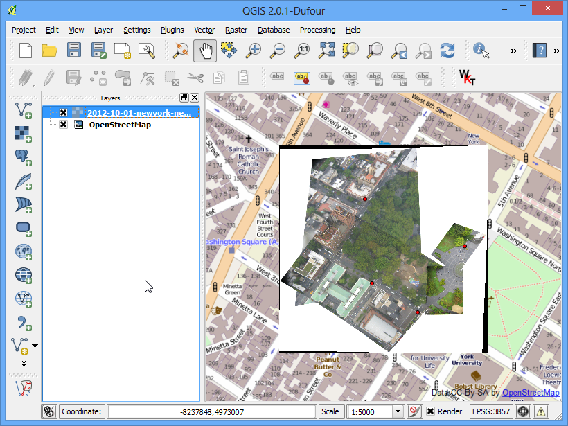
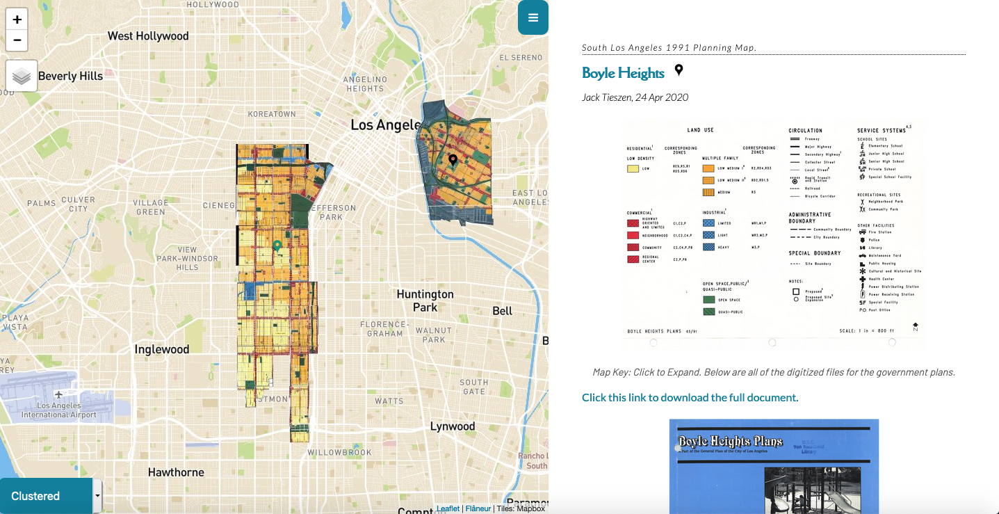

Introduction to QGIS
By Jack Tieszen
Contents
Who/What is this program for?
This workshop is an introduction to QGIS for those who aren't within the geography department.
We will cover: QGIS, georeferencing, geomerging, Mapbox, and Github publishing.
Goals of this workshop
By the end of the program we will have something like this:
https://visualizela.github.io/flaneur/ What is GIS